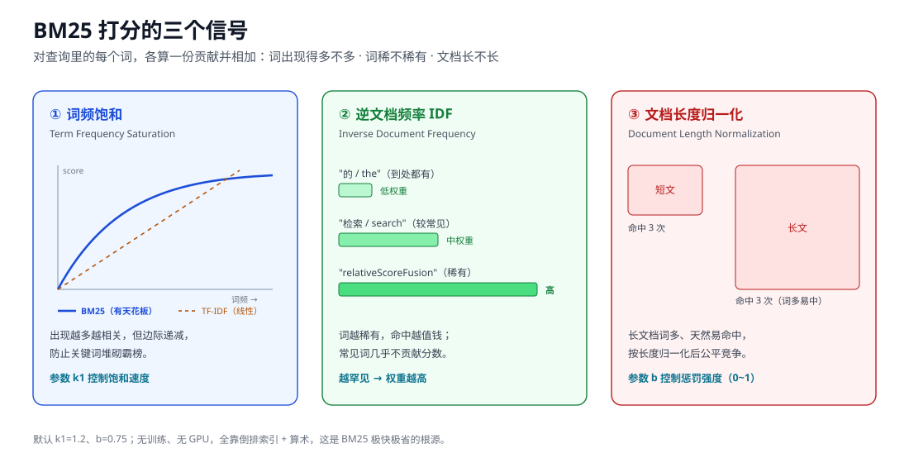
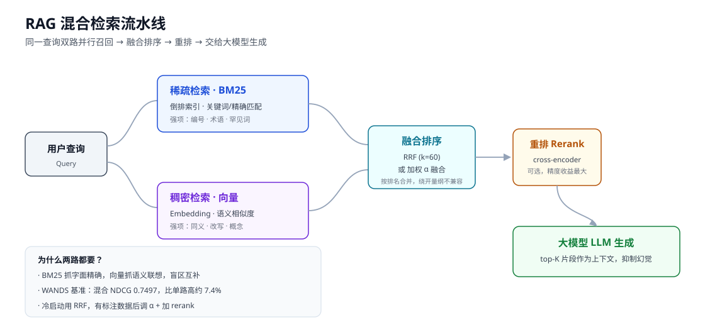
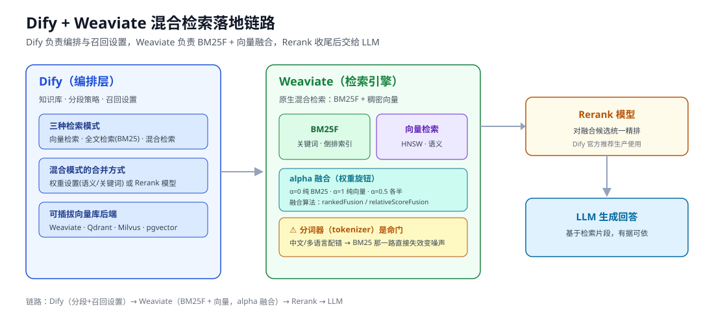
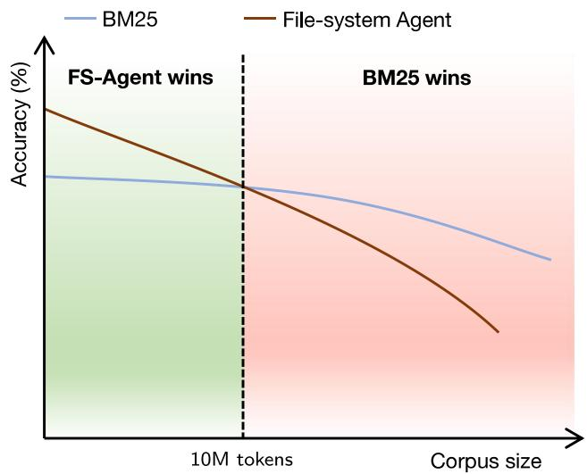

BM25 没有过时，反而在大规模 RAG 里赢了：原理、混合检索与最新规模研究
2026 年 7 月底，一篇标题直白到有点挑衅的论文挂上了 arXiv——《BM25 Wins at Scale》。研究者把语料规模沿 28 个严格嵌套的层级放大了大约 450 倍，在固定问题集、固定 reader 模型、固定评判协议的条件下，逐档比较了词法检索（BM25）、稠密向量检索、图 RAG（GraphRAG）和文件系统智能体（File-System Agent）这几条主流 RAG 路线。结果不是某一方通吃，而是一个随规模变化的交叉点：在约 1000 万 corpus token 处，BM25 反超了此前领先的智能体检索，并在之后每一个更大的层级上持续领先，满规模时优势幅度接近 20 分。
一个诞生于 1990 年代、连神经网络都不需要的"词袋"排序函数，在 2026 年的大模型检索竞赛里，成了成本最低、扩展性最好的那条基线。这既让人意外，又在情理之中。
这篇文章想把 BM25 讲透：它到底怎么打分，为什么在向量检索满天飞的今天还是 RAG 系统的半壁江山，怎么在 Dify + Weaviate 这类工程栈里落地，以及那篇"BM25 反超"的论文到底说了什么。
一、BM25 是什么：一个被低估的"老"算法
BM25 的全称是 Okapi BM25，BM 是 Best Matching（最佳匹配）的缩写，25 是当年一系列实验中表现最好的那个版本编号。它由 Stephen Robertson、Karen Spärck Jones 等人在 1990 年代为 Okapi 信息检索系统提出，理论根基是概率检索模型——给定查询，估计每篇文档"相关"的概率，然后按这个概率排序。
用一句话概括它的性格：BM25 是一个词袋（bag-of-words）排序函数。它只关心查询里的词有没有、在文档里出现了多少次、这些词有多稀有、文档有多长，而完全不关心词与词之间的顺序和距离。"猫追狗"和"狗追猫"在 BM25 眼里是一样的。这听起来很粗糙，但正是这种粗糙让它极其快、极其稳、极其可解释。
值得强调的是它的"存活能力"。三十年过去，BM25 依然是 Apache Lucene、Elasticsearch、OpenSearch 等主流搜索引擎的默认打分函数，是几乎所有"关键词检索"功能背后的算法。你在电商站内搜商品编号、在文档系统里搜一个函数名、在知识库里搜一个专有名词，大概率就是 BM25 在替你干活。
二、BM25 怎么打分：三个可解释的信号
BM25 的打分公式看起来吓人，但拆开就是三件事：这个词在文档里出现得多不多、这个词在整个语料里稀不稀有、这篇文档是不是长得不正常。对查询里的每一个词，都算一份贡献，然后把所有词的贡献加起来。
单个查询词 $q_i$ 对文档 $D$ 的打分大致长这样：
score(D, q) = Σ IDF(q_i) · [ f(q_i, D) · (k1 + 1) ] / [ f(q_i, D) + k1 · (1 - b + b · |D|/avgdl) ]
其中 f(q_i, D) 是词 q_i 在文档 D 里的出现次数，|D| 是文档长度，avgdl 是语料里的平均文档长度，k1 和 b 是两个可调参数。下面逐个信号解释。

信号一：词频饱和（Term Frequency Saturation）
直觉上，一篇文档里"光合作用"出现十次，比只出现一次的文档更可能是在讲光合作用。所以词频越高，分数越高。
但 BM25 的关键改进在于：词频的贡献是有边际递减的。从出现 1 次到 2 次，分数涨得多；从出现 20 次到 21 次，几乎没变化。这就是"饱和"。它防止了一种典型的作弊/失真——某篇文档把关键词堆砌几百遍就霸占榜首。控制这个饱和速度的，就是参数 k1。
这正是 BM25 相对老式 TF-IDF 最重要的进化：TF-IDF 里词频是线性叠加的，越堆越高；BM25 给它加了一条"天花板"。
信号二：逆文档频率（IDF）
一个到处都出现的词（比如"的""是""the"）几乎不携带区分信息，而一个只在极少数文档里出现的词（比如"BM25F""relativeScoreFusion"）一旦命中，信号极强。IDF（Inverse Document Frequency，逆文档频率）就是给稀有词高权重、给常见词低权重的那一项。BM25 用的是 Robertson-Spärck Jones 版本的 IDF，本质是"这个词越罕见，命中越值钱"。
信号三：文档长度归一化
长文档天然更容易命中任意关键词——它词多嘛。如果不加约束，长文档会不公平地占便宜。BM25 用参数 b 结合"文档长度 / 平均长度"来做归一化：b=0 表示完全不做长度惩罚，b=1 表示完全按长度归一化。它保证一篇 200 字里精准命中三次的短文，能和一篇一万字里零散命中三次的长文公平竞争。
三个信号相乘相加，就得到了最终分数。整个过程没有一个可训练参数、没有一次矩阵乘法、没有 GPU——这是它便宜的根本原因。
三、两个旋钮：k1 与 b 的调参
BM25 只有两个需要调的超参数，这也是它工程友好的地方。
k1（词频饱和速度）：值越大，词频的作用越"线性"、饱和越慢；值越小，越快到顶。常用默认k1 = 1.2。b（长度归一化强度）：0 到 1 之间，越大越惩罚长文档。常用默认b = 0.75。
Elastic 官方的经验是：k1=1.2、b=0.75 对大多数语料都工作得不错，很多人一辈子不用改。但"最优值依赖数据"这句话在检索里永远成立。一些公开研究里的调优结果就很不一样：
- 法律案件的短窗口片段：
k1=0.9, b=0.4 - 生物医学摘要：
k1=1.1, b=0.4 - 临床试验文本：
k1=0.2, b=0.72
规律大致是：文档越短越同质，b 可以调小（少惩罚长度）；词频信息越不重要（比如短摘要），k1 可以调小（更快饱和）。真要抠效果，还是得在自己的数据和标注查询上做网格搜索。
顺带一提，BM25 是一个家族，衍生出了 BM25+、BM25L（改进长文档处理）、BM25F（支持标题/正文等多字段加权）等变体。后面要讲的 Weaviate，其关键词检索用的就是 BM25F。
四、BM25 的强项，和它真正的盲区
要理解 BM25 在 RAG 里的定位，得先诚实地列出它的能与不能。
它的强项：
- 精确匹配无敌：产品编号、错误码、人名地名、专有技术术语、罕见词——这些"字面必须一致"的查询，BM25 几乎是最优解。你搜
relativeScoreFusion，它能精准命中唯一那篇提到它的文档。 - 零训练、零推理成本：不需要 embedding 模型，不需要 GPU，索引构建就是建倒排索引，查询是查表加算术。
- 冷启动友好、可解释：新语料灌进去马上能用，且每一分从哪来都能追溯，方便调试。
它真正的盲区，只有一个，但很致命：
BM25 没有任何语义理解。 它只认字面 token。你查"汽车"，一篇通篇写"轿车""机动车"却没出现"汽车"二字的文档，它一分都给不了。同义词、改写、上位/下位概念、跨语言，它统统抓瞎。
而这恰恰是稠密向量检索的主场：把查询和文档都编码成向量，靠语义相似度召回，"汽车"和"轿车"在向量空间里离得很近。但向量检索也有它的软肋——对"只在一两篇文档里逐字出现的罕见词/编号"往往力不从心，因为把长文压成一个定长向量本身是有损的，精确的标识符信息容易在压缩中丢掉。
两者的盲区几乎完美互补。于是就有了 RAG 时代最主流的答案：别二选一，两个一起上。
五、混合检索登场：RAG 为什么离不开 BM25
RAG（Retrieval-Augmented Generation，检索增强生成）的核心动机，是给大模型的回答找"依据"，从而抑制幻觉——先从外部知识库检索相关片段，再把这些片段喂给 LLM 生成答案。检索这一步的召回质量，直接决定了最终答案的上限。检索漏了，生成再强也是巧妇难为无米之炊。
混合检索（Hybrid Search）就是当前 RAG 检索层的事实标准。它的模式很清晰：
- 并行双路召回：对同一个查询，稀疏检索器（BM25 或学习型稀疏检索 SPLADE）和稠密向量检索器同时各自检索，各出一个排好序的候选列表。
- 融合排序：用某种融合算法把两个列表合并成一个统一排序。
- 重排（可选但推荐）：对融合后的头部候选，用 cross-encoder / reranker 模型做精排。
- 喂给 LLM：把最终的 top-K 片段作为上下文交给大模型生成。

这套组合拳的收益是实打实的。在 WANDS 电商检索基准上，调优后的混合方案 NDCG 达到 0.7497，比单独用 BM25（0.6983）或纯向量检索（0.6953）都高出约 7.4%（Turnbull, 2025）。原因不难理解：混合检索让系统同时具备了"语义联想"和"字面精确"两种能力，各自补上对方的漏召回。
如果你想系统了解稠密检索那一侧的选型，可以看这篇 开源向量数据库怎么选；想了解 RAG 平台层的对比，可以参考 Dify vs Coze vs RAGFlow 等横评。
六、两个列表怎么合并：RRF 与权重融合
融合是混合检索里最容易被忽视、却很关键的一环。难点在于：BM25 的分数（可能是 0 到几十的任意实数）和向量检索的余弦相似度（-1 到 1）量纲完全不同，直接相加毫无意义。业界主要有两条路。
路线一：RRF（倒数排名融合）
RRF（Reciprocal Rank Fusion）干脆不看原始分数，只看排名位置，从根上绕开了量纲不兼容的问题。它的公式简单到一行：
RRF(d) = Σ 1 / (k + rank_i(d))
对每个文档 d，在每一路检索结果里取它的排名 rank_i(d)，算 1/(k+rank)，再把各路加起来。排得越靠前，贡献越大。常数 k 起平滑作用，业界几乎清一色用 k=60——经验上接近最优，且对具体取值不敏感。
RRF 的好处是零配置、鲁棒、不需要标注数据，是"开箱即用"的默认选择。Elasticsearch、Milvus、Apache Doris、Azure SQL、LanceDB 等一大批系统都内置了它。
路线二：加权分数融合（Weighted / Convex Combination）
另一条路是把两路分数各自归一化后加权求和：final = α · vector_score + (1-α) · bm25_score。这里的 α 就是那个著名的权重旋钮：α=0 纯 BM25，α=1 纯向量，α=0.5 各占一半。
加权融合的上限更高，但需要调 α，最好有几十条以上的标注查询来指导。一个常见的工程经验是：让 BM25 权重落在 0.3–0.4 附近，避免关键词噪声过度稀释语义信号——当然，这高度依赖你的语料和查询分布，编号/术语密集的场景就该给 BM25 更多话语权。
一个实用的决策是：冷启动先用 RRF（k=60），等攒够了标注数据再切到加权融合并调 α，最后加一个 cross-encoder 重排拿最大的单点精度收益。
七、工程落地：Dify + Weaviate 的混合检索
讲完原理，看一个具体、常见的工程栈：用 Dify 做 RAG 编排、用 Weaviate 做向量数据库后端。这套组合把上面的理论几乎原样落了地。
Dify 侧：三种检索模式 + 融合方式
Dify 的知识库提供三种检索模式：
- 向量检索：纯语义召回。
- 全文检索：关键词召回，也就是 BM25 那一类。
- 混合检索：语义 + 关键词双路并行，再合并——这是生产环境的推荐选择。
在混合检索下，Dify 提供两种合并方式：权重设置（调语义权重 vs 关键词权重，对应上面的 α 思路）和 Rerank 模型（用重排模型对两路结果统一精排）。官方建议优先用 Rerank 模型来提升最终精度。Dify 支持把 Weaviate、Qdrant、Milvus、pgvector 等作为向量库后端，并提供官方 Weaviate 插件。
Weaviate 侧：BM25F + 向量 + alpha 融合
Dify 底层依赖的 Weaviate，其原生混合检索就是关键词（BM25F 打分）+ 稠密向量在查询时融合。两个关键设计：
alpha参数控制两路权重：alpha=0纯 BM25（关键词），alpha=1纯向量（语义），alpha=0.5各半。不同框架默认值不同，比如 Haystack 的 Weaviate 检索器默认alpha=0.7（偏向量）。- 两种融合算法：
rankedFusion（基于排名，早期默认）和relativeScoreFusion（基于归一化分数，自 v1.24 起成为默认，通常召回更好）。

一个真实的坑：分词器
有一个细节值得单独拎出来说，因为它坑过很多中文/多语言团队：BM25 作用的是 token，不是原始文本。 文档在入库时被分词器（tokenizer / analyzer）切成一个个 token，BM25 只在这些 token 上匹配。如果分词器配错了——比如中文没用合适的分词、法语的"café"被重音处理搞坏、波兰语的"Łódź"被拆错——那么关键词那一路会直接失效，变成纯噪声，反而拖累整体质量，而且再好的 embedding 也救不回来。Weaviate 从 v1.37 起把分词器做成了可观测、支持按属性配置停用词，就是在正面回应这个痛点。
组合起来，这条链路是：Dify（分段策略 + 召回设置）→ Weaviate（BM25F + 向量，alpha 融合）→ Rerank 模型 → 喂给 LLM。如果你还想把整条链路的召回质量、成本、延迟监控起来，可以配合 Langfuse 这类可观测性工具。
八、最新研究：语料越大，BM25 越能打
现在回到开头那篇论文——《BM25 Wins at Scale: A Scaling Study of Retrieval-Augmented Generation Paradigms》（arXiv:2607.26497，Pengyu Wang、Benfeng Xu 等，2026 年 7 月）。它之所以值得单独一节，是因为它第一次在严格控制变量、只变语料规模的条件下，把几条 RAG 路线放在同一把尺子下量。
实验怎么做的： 把语料规模沿 28 个严格嵌套的层级扩展，跨度约 450 倍，同时保持问题集不变、保持一个固定的"相关文档 + 对抗文档"基底不变，用同一个 reader 模型和同一套评判协议，测量官方准确率、构建与查询的 token 消耗、以及延迟。这种设计的好处是，它排除了"不同方法在不同 benchmark、不同语料尺寸上各说各话"的老毛病。
结论是一个"随规模变化的交叉"，而不是绝对赢家：
- 小语料端：File-System Agent（文件系统智能体检索）领先。但它靠顺序探索，在基底规模上要多耗 39 倍的查询 token，而且随着搜索空间变大，它反而越来越不灵。
- 约 1000 万 corpus token 处：BM25 反超，并在其后每一个更大的层级持续领先，满规模时优势幅度接近 20 分。
- 成本维度：BM25 锚定了 Pareto 前沿的低成本端——它压根不需要 LLM 参与索引构建。
- 其他路线：稠密向量检索全程高效，但准确率偏低；图 RAG（GraphRAG）在到达部署规模之前就撞上了"构建墙"，它那些可扩展变体在同层级也仍然不及 BM25。

图片来源：BM25 Wins at Scale: A Scaling Study of RAG Paradigms（arXiv:2607.26497）
作者的总体判断是：语料越大，越青睐"全局候选排序"这种做法；词法检索是最强的可扩展默认项；而智能体式推理最好用在"排序发现之后"，而不是拿来取代排序。 换句话说，别让智能体一篇篇地"读文件找答案"，先用 BM25 把全局候选排出来，再让智能体在小候选集上做推理。
这个结论并非孤例。还有一项来自 Google DeepMind 的研究从几何角度给出了理论解释：单向量嵌入的"查询-文档"打分矩阵，其秩受限于嵌入维度，因此当语料超过某个规模，单向量模型在数学上就无法再正确切分文档空间——粗略地说，512 维模型在约 50 万文档处开始可靠地失败，即便是 4096 维的大模型也会在约 2.5 亿文档处崩溃。这从底层解释了：为什么在足够大的语料上，不依赖固定维度压缩的 BM25 反而更稳。
需要提醒的是，"BM25 在大规模下反超"并不等于"向量检索没用了"。论文比较的是单独各条路线；而生产系统里真正的最优解，往往仍是把 BM25 的规模鲁棒性和向量的语义能力混合起来用。这项研究的价值，是纠正了"语义检索天然全面碾压关键词检索"的流行误解，并给了 BM25 一个理直气壮留在技术栈里的硬证据。
九、到底该用哪个：一张选型心法
把上面的东西收敛成可操作的建议：
- 查询以精确匹配为主（编号、代码、专有名词、法律/金融条款）：BM25 优先，甚至可以纯 BM25。
- 查询以语义/改写/概念为主（自然语言问答、模糊描述）：向量检索是基本盘。
- 两种查询都有（绝大多数真实业务）：上混合检索，冷启动用 RRF（k=60），有数据后调 α + 加 rerank。
- 语料规模很大（千万 token 以上）：务必保留 BM25 这条腿，它在大规模下的鲁棒性和成本优势最新研究已经背书。
- 别忘了分词器：中文和多语言场景，先把 tokenizer 验对，否则 BM25 那一路等于白建。
小结
BM25 是那种"越了解越尊重"的算法。它用三个朴素到近乎笨拙的信号——词出现得多不多、稀不稀有、文档长不长——换来了极致的速度、成本、可解释性和规模鲁棒性。在向量检索和大模型光芒万丈的 2026 年，它非但没有被淘汰，反而因为一篇《BM25 Wins at Scale》被重新推到聚光灯下。
真正的启示或许不是"BM25 打败了向量检索"，而是：在检索这件事上，没有银弹，只有配合。 让 BM25 负责它擅长的字面精确和大规模排序，让向量负责语义联想，让 reranker 收尾，让智能体在排好序的候选上做推理——这才是当下 RAG 系统最稳的姿势。下次搭 RAG 时，别急着只上向量库，给这个三十岁的老算法留个位置。
免责声明
本文内容基于公开资料与论文整理，用于技术学习与交流。文中涉及的算法参数、性能数据、产品默认值等可能随版本更新而变化，实际使用请以官方文档和你自己数据上的实测为准。文中提及的第三方产品与研究成果，版权归原作者所有。
参考来源
- Okapi BM25 - Wikipedia
- Practical BM25 - Part 2: The BM25 Algorithm and its Variables - Elastic
- Practical BM25 - Part 3: Considerations for Picking b and k1 - Elastic
- BM25 Search Engine - EmergentMind（k1/b 分场景取值）
- BM25 Okapi Ranking Calculator - Metricgate
- Hybrid Search for RAG: BM25, SPLADE, and Vector Search Combined - Prem AI
- Combining BM25 and Dense Vector Search (2026 Guide) - Denser.ai（WANDS NDCG 数据）
- BM25, Vector & Reranking Reference 2026 - Digital Applied
- Reciprocal Rank Fusion - Apache Doris Docs（k=60）
- What is Reciprocal Rank Fusion? - ParadeDB
- Hybrid Search Explained - Weaviate
- Unlocking Hybrid Search: A Deep Dive into Weaviate's Fusion Algorithms
- Alpha Parameter - Weaviate Knowledge Cards
- Tokenization & Text Analysis for Hybrid Search - Weaviate
- Hybrid Search - Dify Docs
- Weaviate 插件 - Dify Marketplace
- BM25 Wins at Scale: A Scaling Study of RAG Paradigms - arXiv:2607.26497
- Why Pure Vector Search Fails and What to Do Instead（含 DeepMind 嵌入维度约束）
- Hybrid Retrieval for Hallucination Mitigation in LLMs - arXiv:2504.05324
延伸阅读
- 开源向量数据库怎么选：混合检索时代的选型指南
- Dify vs Coze vs RAGFlow vs n8n vs FastGPT 横评
- Langfuse：LLM 与 Agent 的可观测性实战
- MinerU：文档解析 Agent 与 RAG、VLM 的结合
- 企业级 AI Agent 部署指南
推荐搭配装备
善其事，利其器。以下硬件能最大化你的AI体验👇
🔗 通过以上链接购买可支持本站持续运营 🙏